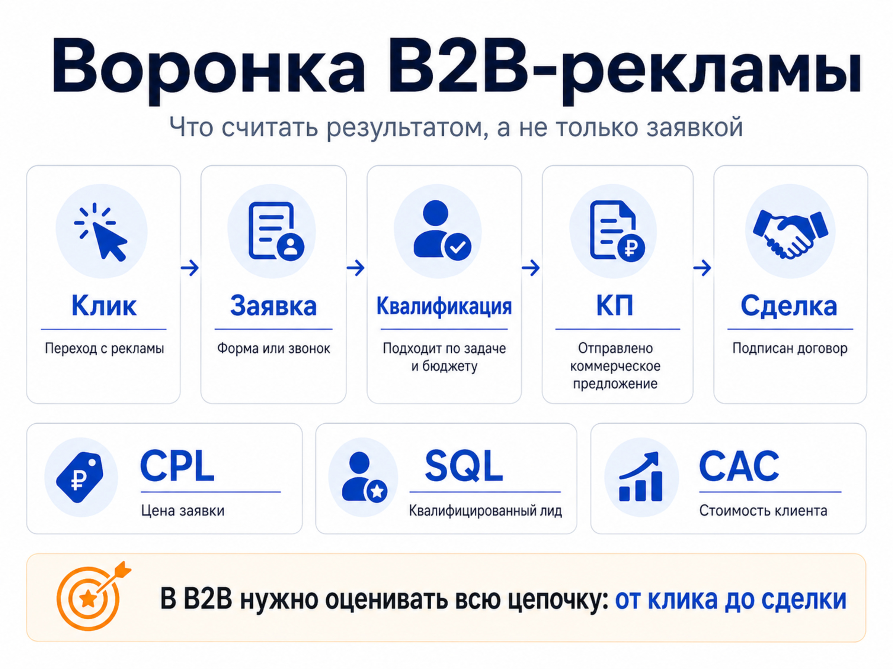
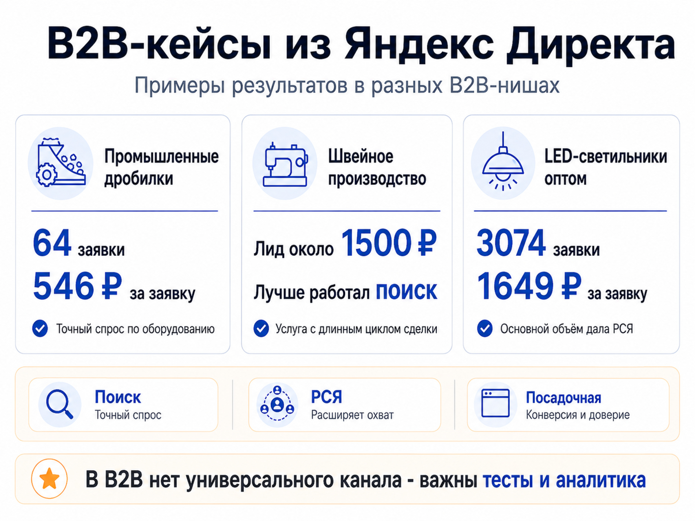

Блог о платном трафике
Контекстная реклама для B2B: как получать заявки из Яндекс Директа
Контекстная реклама для B2B работает, если настраивать ее под реальный процесс покупки бизнеса. В таких проектах человек редко принимает решение сразу после первого клика. Он сравнивает поставщиков, запрашивает условия, согласует бюджет, обсуждает технические детали и только потом переходит к договору.
Поэтому в B2B я оцениваю не только цену заявки. Нужна вся цепочка: поисковый запрос или аудитория -> переход на сайт -> обращение -> квалифицированный лид -> коммерческое предложение -> сделка. Если смотреть только на клики и формы, можно масштабировать кампанию, которая хорошо выглядит в Директе, но почти не приносит продаж.
Чем контекстная реклама в B2B отличается от B2C
Главное отличие - длина и сложность принятия решения. В рознице человек может увидеть товар, перейти на сайт и сразу купить. В B2B часто участвуют несколько людей: собственник, закупщик, руководитель отдела, технический специалист. У каждого свои критерии выбора.
Из этого следуют особенности рекламы:
- спрос часто узкий и низкочастотный;
- часть запросов выглядит профессионально и содержит технические характеристики;
- одинаковая заявка по форме еще не означает одинаковое качество лида;
- сайт должен помогать сравнить поставщиков и снизить риск для клиента;
- результат рекламы желательно связывать с CRM и реальными продажами;
- решение может требовать нескольких касаний, поэтому РСЯ и ретаргетинг иногда дают больше результата, чем кажется по первому клику.
Контекст в B2B хорошо подходит для работы со сформированным спросом, когда компания уже ищет поставщика, оборудование, подрядчика или услугу. Но ограничиваться только поиском не всегда правильно.
Поиск или РСЯ: что лучше для B2B
Поиск Яндекса показывает рекламу в момент, когда пользователь сам формулирует потребность. Если человек вводит запрос вроде «промышленные дробилки купить», «пошив одежды оптом» или «LED светильники оптом», его намерение уже достаточно понятно.
Поэтому поиск обычно стоит тестировать одним из первых. Но у него есть ограничение: в узких B2B-нишах объем прямого спроса быстро заканчивается, а конкуренция за самые очевидные запросы бывает высокой.
РСЯ работает иначе. Алгоритмы находят аудиторию по интересам, поведению, тематике, данным Метрики и другим сигналам. Это позволяет выйти за пределы прямых поисковых запросов. Подробнее механику я разбираю в статье что такое РСЯ в Яндекс Директ.
На практике нет правила «для B2B всегда работает только поиск». В моих проектах встречались обе ситуации.
У компании, которая помогала организовать швейное производство под ключ, основной поток обращений шел с поиска. Стоимость заявки держалась примерно в диапазоне 1500-3000 рублей, а наиболее стабильная поисковая кампания давала лид около 1500 рублей. кейс организации швейного производства
В проекте фабрики детской одежды ситуация была другой. РСЯ стала основным источником лидов примерно по $4, тогда как поиск по услуге пошива давал обращения примерно по $13. Для готовой продукции со склада поисковая заявка была заметно дороже. кейс фабрики детской одежды
Еще показательнее оптовые продажи LED-светильников. За год реклама принесла 3074 заявки со средней стоимостью 1649 рублей без НДС, а основной масштаб обеспечила именно РСЯ. Подробнее - в кейсе оптовых продаж LED-светильников.
Вывод простой: источник нужно выбирать по данным конкретного проекта. Поиск собирает сформированный спрос, а РСЯ может расширить объем и найти аудиторию, которую невозможно охватить только списком запросов.

Как собирать семантику для B2B
В B2B я не ограничиваюсь запросами с добавками «купить» и «заказать». Нужно понять, как клиент описывает задачу на разных этапах выбора.
Обычно семантику можно разделить на несколько слоев:
- Прямой спрос: название продукта или услуги с коммерческим намерением.
- Технический спрос: характеристики, типы оборудования, материалы, стандарты, технологии.
- Сценарии применения: запросы по задаче, которую хочет решить компания.
- Отраслевые формулировки: терминология, которой пользуются закупщики и специалисты.
- Конкурентный и альтернативный спрос: бренды, аналоги и заменяющие решения, если такой трафик экономически оправдан.
При этом собирать тысячи фраз вручную ради самого количества уже нет смысла. В текущем Яндекс Директе вместе с ключевыми фразами работает автотаргетинг. Он анализирует запрос, объявление и посадочную страницу и может расширять охват за пределами подготовленной семантики. Поэтому тексты объявлений и содержимое сайта тоже влияют на то, какой трафик получает кампания.
Общий подход к современной настройке я описал в материале как настроить рекламу в Яндекс Директ в 2026 году.
После запуска я регулярно смотрю отчет по ЧޭDzڮ݆Аސݐؠпомогают снять риск.
В B2B не всегда нужна кнопка «Купить». Для оптовых LED-светильников лучше работали запрос прайса, расчет стоимости и квиз подбора освещения. У фабрики одежды были разделены два предложения: пошив на заказ и продажа готовой продукции оптом. Для каждого сделали отдельную посадочную.
Это хороший пример того, почему сегментация должна продолжаться после клика. Если объявления разделены по разным потребностям, а все ведут на одну универсальную страницу, часть смысла настройки теряется.
Подробнее о выборе посадочной можно посмотреть в статье что такое лендинг в Яндекс Директе.
Что считать конверсией в B2B
Самая простая цель - отправка формы. Для запуска этого достаточно, но для нормальной оптимизации B2B-проекта со временем желательно передавать более глубокие события.
Например:
- заявка прошла первичную квалификацию;
- клиент соответствует минимальному объему заказа;
- состоялся содержательный звонок;
- отправлено коммерческое предложение;
- лид дошел до нужного этапа в CRM;
- заключена сделка.
Яндекс Директ поддерживает передачу офлайн-конверсий из CRM. Это особенно полезно в B2B, где покупка часто происходит через недели после первого визита на сайт. Если алгоритм получает только все формы подряд, он может оптимизироваться на тех пользователей, которые чаще оставляют заявку, но хуже покупают.
Поэтому CPA заявки нужно смотреть вместе с качеством лида. Сам принцип расчета разобран отдельно в статье CPA в Яндекс Директе: что это и как считать.

Почему дешевый лид не всегда лучший
Представим две кампании.
Первая дает 30 заявок по 1500 рублей, но отдел продаж считает целевыми только 3.
Вторая дает 15 заявок по 2500 рублей, из которых 8 подходят бизнесу.
Если смотреть только на CPL, первая кампания выглядит лучше. Если считать стоимость квалифицированного обращения, картина меняется.
Поэтому для B2B я бы разделял как минимум три показателя:
| Показатель | Что показывает |
|---|---|
| CPL / CPA заявки | Сколько стоит обращение с рекламы |
| Стоимость квалифицированного лида | Сколько стоит обращение, которое соответствует требованиям бизнеса |
| CAC / стоимость клиента | Сколько рекламных расходов пришлось на реальную продажу |
Не всем проектам удается быстро дойти до расчета клиента по каждой кампании. Но хотя бы простая передача статуса «целевой / нецелевой» уже дает намного больше информации, чем количество форм на сайте.
Реальные B2B-кейсы из Яндекс Директа
Промышленное оборудование
В проекте поставщика промышленных дробилок рекламировалось оборудование стоимостью от нескольких миллионов рублей. За рекламный бюджет 35 000 рублей было получено 64 заявки через формы со стоимостью 546 рублей. Дополнительно фиксировались письма, звонки и обращения через виджеты сайта.
Ключевой вывод из этого проекта не в самой цифре CPL. Он показывает, что даже дорогой промышленный продукт может получать обращения через контекст, если реклама точно попадает в технический спрос, а посадочная не мешает пользователю связаться с поставщиком. кейс поставщика промышленных дробилок
Производство одежды
У фабрики детской одежды реклама была разделена по двум направлениям: пошив партий под заказ и оптовая продажа готовой продукции. Отдельные посадочные помогли не смешивать разные намерения аудитории. РСЯ стала главным источником объема и давала лиды примерно по $4. кейс фабрики детской одежды
В другом проекте рекламировалась организация швейного производства под ключ. Там лучше работал поиск, а стабильная стоимость заявки была около 1500 рублей. Разница между двумя проектами хорошо показывает, почему нельзя заранее объявить один тип кампании «лучшим для всего B2B». кейс организации швейного производства
Оптовые LED-светильники
В оптовом проекте за год было получено 3074 заявки со средней стоимостью 1649 рублей без НДС при бюджете чуть больше 5 млн рублей. Для конверсии использовались запрос прайса, расчет и квиз, а основной объем пришел из РСЯ.
Здесь контекстная реклама работала уже не как небольшой тест, а как масштабируемый канал лидогенерации. кейс оптовых продаж LED-светильников

Что чаще всего мешает B2B-рекламе
Оценка по кликам и CTR
Высокий CTR может означать, что объявление хорошо привлекает внимание. Но он ничего не говорит о том, сколько лидов дошло до продажи. В B2B основной отчет должен постепенно смещаться от рекламных метрик к качеству обращений.
Смешивание разных сегментов
Производитель, дилер, монтажная компания и конечный корпоративный заказчик могут искать один и тот же продукт по-разному. Если их смешать в одной посадочной и одном сообщении, реклама становится слишком общей.
Слабая квалификация
Если бизнес работает только с заказами от определенной суммы, региона или объема, это лучше сообщить заранее. Иногда снижение общего числа заявок повышает ценность рекламы, потому что менеджеры перестают тратить время на неподходящие обращения.
Недостаточная аналитика длинной сделки
Если договор заключается через месяц, нельзя оценивать кампанию только по сегодняшним продажам. Нужно хранить источник лида и возвращать в аналитику результат после обработки.
Попытка масштабировать только поиском
В узкой нише поиск может физически не дать нужного количества обращений. Тогда приходится работать с РСЯ, ретаргетингом, более широкими задачами аудитории и другими рекламными гипотезами.
Сколько стоит контекстная реклама для B2B
Универсальной цены нет. На бюджет влияют частотность запросов, регион, конкуренция, стоимость клика, конверсия сайта, качество трафика и допустимая стоимость клиента.
Я бы считал бюджет от экономики бизнеса, а не от средней цифры по рынку. Сначала нужно определить, сколько компания может платить за клиента, затем учесть конверсию отдела продаж из квалифицированного лида в договор и получить допустимую стоимость обращения.
Отдельно оплачивается работа по настройке и ведению, отдельно - рекламный бюджет Яндекса. Подробнее структура расходов разобрана в статье стоимость контекстной рекламы.
Когда контекстная реклама подходит B2B-компании
Яндекс Директ имеет смысл тестировать, если потенциальные клиенты уже ищут продукт или решение, либо аудиторию можно достаточно точно описать через интересы, поведение и накопленные данные.
Хорошая стартовая ситуация выглядит так:
- есть понятный продукт и сегмент клиентов;
- бизнес знает, какие заявки считаются целевыми;
- сайт способен объяснить предложение и собрать обращение;
- менеджеры фиксируют результат обработки лида;
- экономика позволяет выделить бюджет на тест и обучение кампаний.
Если этого нет, реклама все равно может привести трафик, но проблема быстро переместится из рекламного кабинета в сайт, предложение или продажи.
Главное
Контекстная реклама для B2B - это управляемая система привлечения спроса, а не набор объявлений. Поиск помогает забирать сформированные запросы, РСЯ дает дополнительный масштаб, посадочные страницы разделяют разные потребности, а CRM показывает, какие заявки действительно превращаются в деньги.
В моих B2B-проектах нет одного универсального победителя. В организации швейного производства лучше работал поиск, а в оптовых LED-светильниках и у фабрики одежды основной объем давала РСЯ. Поэтому стратегию нужно строить не по шаблону, а по реальным данным конкретной ниши.
Если нужна настройка и ведение Яндекс Директа с анализом всей цепочки от трафика до заявки, описание моего подхода и примеры работ собраны на главной странице naklikay.ru.